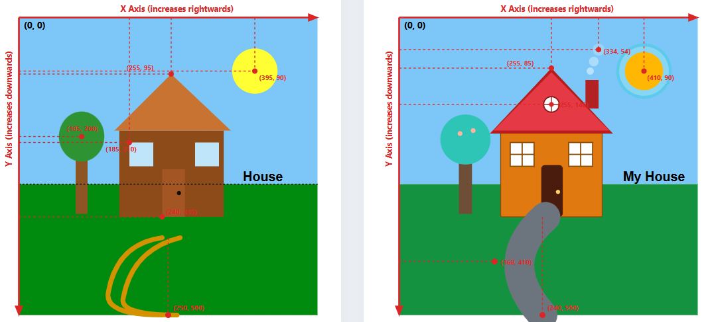

SVG Vector Drawing
A side-by-side comparison illustrating initial vector code vs customized artwork with groups, transforms, coordinate points and element specifications.
Initial Design (Before)
Customised Design (After)
Coordinate Annotations
Annotated diagram showing the coordinate system, inverted axes and element anchor points.

Comparision Before and After
| Element | Initial Design (Before) | Customised Design (After) |
|---|---|---|
| Sun | cx="395", cy="90", r="38" | cx="410", cy="90", r="32" |
| Tree Canopy | cx="105", cy="200", rx="38", ry="42" | cx="111", cy="205", r="42" (Added blossoms) |
| Roof | points="160,190 255,95 355,190" fill="#c97332" |
points="152,195 255,85 358,195" fill="#b71c1c" (Added red tile layers) |
| Attic Window | N/A | cx="255", cy="146", r="13" |
| Wall | x="168", y="190", w="175", h="145" fill="#8c4b18" |
x="170", y="190", w="170", h="145" fill="#e07a10" |
| Door | x="240", y="255", w="38", h="80" | x="238", y="248", w="36", h="87" (Rounded top arch) |
| Doorknob | cx="268", cy="295", r="3.5" fill="#111111" |
cx="266", cy="293", r="3.5" fill="#ffd166" (Brass knob) |
| Left Window | transform="translate(185, 210)" Plain rect fill |
transform="translate(186, 210)" 4-pane mullion grid with white glass |
| Right Window | transform="translate(295, 210)" Plain rect fill |
transform="translate(284, 210)" 4-pane mullion grid with white glass |
| Smoke | N/A | rect x="312", y="105", w="22", h="48" Smoke puffs up to (334, 54) |
| Path | Dual stroke path lines terminating at (240, 500) and (265, 500) |
Paved walkway (stroke-width: 50) Inflection at (160, 410), exits at (240, 500) |
| Label Text | x="375", y="275", text="House" | x="375", y="275", text="My House" |